Overview
Rabbits have very specific dietary needs that keep their digestive systems healthy and their teeth in good shape. Unlike other pets, rabbits require a diet that is mostly made up of fiber-rich hay. Hay not only aids in digestion but also helps wear down their continuously growing teeth. A balanced rabbit diet also includes leafy green vegetables and a small number of pellets for added nutrients. Avoid feeding sugary treats or high-carb foods, as these can lead to health problems.
Daily Diet Breakdown
| Food Type | Recommended Portion | Why It’s Important |
|---|---|---|
| Hay & Fresh Grass | ~85% | Essential for digestion and dental health |
| Leafy Greens | ~10% | Provides essential vitamins and hydration |
| Pellets | ~5% | Optional supplement for extra nutrients |
Leafy Greens: How Much to Feed
Adjust the amount of fresh leafy greens based on your rabbit’s body weight. These veggies support hydration and add nutritional variety.
| Rabbit Weight | Max Amount of Leafy Greens |
|---|---|
| 2 lbs | 1 cup |
| 3 lbs | 1.5 cups |
| 4 lbs | 2 cups |
| 5 lbs | 2.5 cups |
| 6 lbs | 3 cups |
| 7 lbs | 3.5 cups |
| 8 lbs | 4 cups |
| 9 lbs | 4.5 cups |
| 10 lbs | 5 cups |

Safe Greens
- Arugula
- Carrot tops
- Leafy lettuces (red, green, romaine)
- Turnip greens
- Dandelion greens
- Mint, Basil, Cilantro
- Watercress, Dill, Bok choy
Greens to Avoid
- Iceberg lettuce
- Onion greens
Fruit Treats (In Moderation!)
While a rabbit’s diet should mainly consist of hay and leafy greens, small amounts of fruit can be given as occasional treats. Fruits like banana slices, apples (without seeds), blueberries, pears, melons, and strawberries are bunny-safe in tiny portions. These should be limited to just a few bites a few times a week, as too much sugar can upset their digestion.
Pellets
Pellets are optional but can be a helpful supplement if used sparingly. Be cautious not to overfeed, as excess pellets can lead to obesity and discourage hay consumption. Stick to a measured amount once daily and avoid refilling if they finish early.
Water & Treats
Fresh, clean water must always be available. Dehydration can lead to serious illness in rabbits. Occasional treats are okay, but limit sugary fruits and commercial snacks.
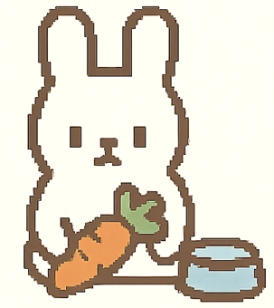Feed the Bunny!
Select a food item to feed the bunny and see how it reacts.
 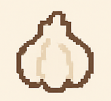
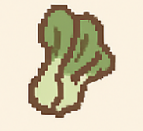
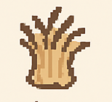
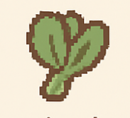
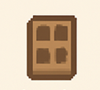
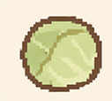
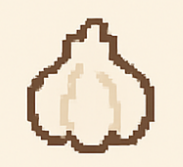
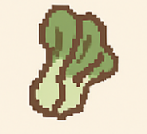
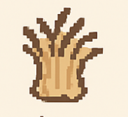
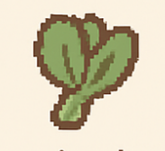
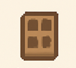
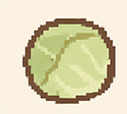

 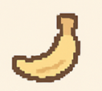
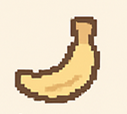
 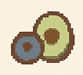
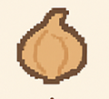
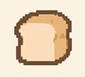
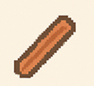
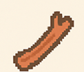
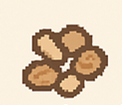
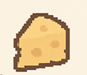
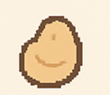
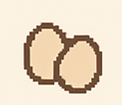
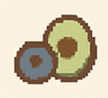
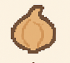
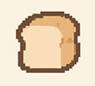
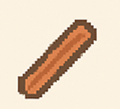
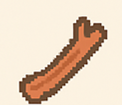
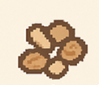
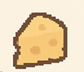
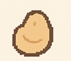
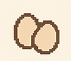